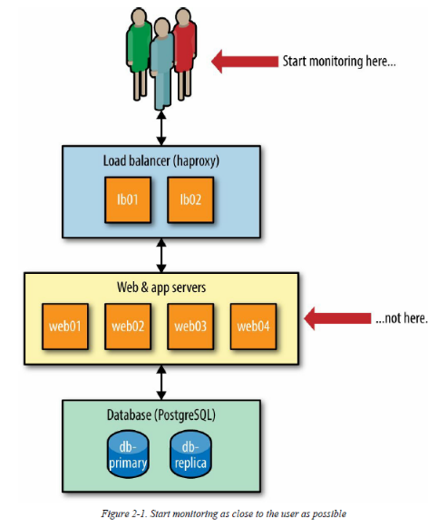

I. Monitoring Principles
Chapter 1. Monitoring Anti-Patterns
An anti-pattern is something that looks like a good idea, but which fires back badly when applied - Jim Coplien.
Anti-Pattern #1: Tool Obsession
The author points out two problems in this first section:
- Being captive to the features of your monitoring tool.
- Searching for THE tool when many are needed.
He illustrates his first point with the following quote from Richard Bejtlich:
Too many security organizations put tools before operations. They think "we need to buy a log management system" or "I will assign one analyst to antivirus duty, one to data leakage protection duty." And so on. A tool-driven team will not be effective as a mission-driven team. When the mission is defined by running software, analyst become captive to the features and limitations of their tools.
Richard Bejtlich - The Practice of Network Security Monitoring
Relatedly, monitoring isn't just a single, cut-and-dry problem. Monitoring is multiple complex problems under one name, so it stands to reason that it can't be solved with a single tool. Multiple tools are needed, and this is what mission-driven teams will naturally gravitate toward:
Analyst who think in terms of what they need in order to accomplish their mission will seek tools to meet those needs, and keep looking if their requirements aren't met. Sometimes they even decide to build their own tools.
Richard Bejtlich - The Practice of Network Security Monitoring
There is no single-pane-of-glass tool that will suddenly provide us with perfect visibility into our network, servers and applications. Just like a professional mechanic has an entire box of tools, some general and some specialized, so should you.
Now that you are convinced that many tools are needed, you might start to get worried about the increase in complexity integrating many tools to your environment will bring. How many tools are too many? How many tools do I need?
As few as you need to get the job done
But there's a nuance to this general rule of thumb: In essence it's desirable that your teams are using tools that solve their problems, instead of being forced into tools that are a poor fit for their needs. On the other hand where you should be rightfully worried is when you have many tools that have an inability to work together. In other words: عينك ميزانك
Anti-pattern #2: Monitoring-as-a-Job
Monitoring is not a job - it's a skill, and it's a skill everyone on your team should have to some degree. As you move along your monitoring journey, insist that everyone be responsible for monitoring. One of the core tenets of the DevOps movement is that we're all responsible for production, not just the operations team. Network engineers know best what should be monitored in the network and where the hot spots are. Your software engineers know the applications better than anyone else, putting them in the perfect position to design great monitoring for the applications.
Strive to make monitoring a first-class citizen when it comes to building and managing services. Remember, it's not ready for production until it's monitored. The end result will be far more robust with great signal-to-noise ratio, and likely far better signal than you've ever had before.
There is a distinction that must be made here, of course: the job of building self-service monitoring tools as as service you provide to another team is a valid and common approach. In these situations, there is a team whose job is to create and cultivate the monitoring tools that the rest of the company relies on. However, this team is not responsible for instrumenting the applications, creating alerts, etc.
Anti-Pattern #3: Checkbox Monitoring
Checkbox monitoring is when you have monitoring systems for the sole sake of saying you have them (because of regulation compliance, or a higher up requirement). In order to to check it off the to-do list, you often set up the simplest and easiest monitoring system and the result is always the same: your monitoring is ineffective, noisy and untrustworthy. There are a few things you can do to fix this anti-pattern:
What Does "Working" Actually Mean? Monitor That.
To fix this problem, you first need to understand what it is you're monitoring. What does "working" mean in this context?
OS Metrics Aren't Very Useful – for Alerting
Some services are resource-intensive by nature and that's OK. If MySQL is using all of the CPU consistently, but response times are acceptable, then you don't really have a problem. That's why it's far more beneficial to alert on what "working" means as opposed to low-level metrics such as CPU and memory usage.
That isn't to say these metrics aren't useful, of course. OS metrics are critical for diagnostics and performance analysis, as they allow you to spot blips and trends in underlying system behavior that might be impacting performance. 99% of the time, they aren't worth waking someone up over. Unless you have a specific reason to alert on OS metrics, stop doing it.
Collect Your Metrics More Often
Imagine latency between two of your critical services spikes every 30 seconds. Only collecting metrics every five minutes means you're effectively blind. Opt for collecting metrics at least every 60 seconds. If you have a high-traffic system, opt for more often, such as every 30 seconds or even every 10 seconds.
Modern servers and network gear can easily handle the minuscule load more monitoring will place on them. Of course, keeping high-granularity metrics around on disk for a long period of time can get expensive. You probably don't need to store a year of CPU metric data at 10-second granularity. Make sure you configure a roll-up period that makes sense for your metrics.
If your devices are old however, they might fall over when hit with too many requests for monitoring data. Be sure to test them in a lab before increasing the polling interval for these.
Anti-Pattern #4: Using Monitoring as a Crutch
Avoid the tendency to lean on monitoring as a crutch. Monitoring is great for alerting you to problems, but don't forget the next step: fixing the problems. If you find yourself with a finicky service and you're constantly adding monitoring to it, stop and invest your effort into making the service more stable and resilient instead. More monitoring doesn't fix the a broken system.
Anti-Pattern #5: Manual Configuration
Your monitoring should be 100% automated. Services should self-register instead of someone having to add them. The difficulty in building a well-monitored infrastructure and app without automation cannot be overstated.
Wrap-up
Now that you know the monitoring anti-patterns to watch out for and how to fix them, you can build positive monitoring habits. And for that, we’ll need to talk about the inverse of the anti-pattern: the design pattern.
Chapter 2. Monitoring Design Patterns
Pattern #1 Composable Monitoring
The principle of Composable monitoring is simple: use multiple specialized tools and couple them loosely together, forming a monitoring platform. Composable monitoring can be thought of as the UNIX philosophy in action:
Write programs that do one thing and do it well. Write programs to work together. -Doug McIlroy
One of the biggest perks of composable monitoring is the flexibility it provides. If one tool no longer suits your needs, you can remove it and replace it with another, instead if replacing your entire platform. Making sure that all the different tools communicate well with each other might lead to a more complex architecture, but the benefits far outweigh the costs.
The Components of a Monitoring Service
If we are to build a monitoring platform from loosely coupled specialized components, we fist have to break down what the facets of a monitoring system are. A monitoring service has five primary facets:
- Data collection
- Data storage
- Visualization
- Analytics and reporting
- Alerting
Let's dig into each of these components:
Data Collection
There are two primary ways for data collection to happen: push or pull.
In the pull model, a service will request that a remote node sends data about itself. The central service is responsible for scheduling when those request happen. A typical use case is the /health endpoint pattern in application monitoring, which exposes metrics and health information about an app to an HTTP endpoint, which can be polled by a monitoring service, a service discovery tool, or by a load balancer. When it comes to metrics, there are some annoying downsides for a pull-based mechanism: a pull model can be difficult to scale as it requires central systems to keep track of known clients, handle scheduling, and parsing returning data.
In the push model, a client (a server, an application, etc.) pushes data to another location. The client may do so on a regular schedule or as events occur. I don't really understand why, but the author says that a push model is easier to scale in a distributed architecture. Nodes pushing data need only know where to send it, and don't need to worry about underlying implementation of the receiving ends. As a result, the push model can have better redundancy and high availability.
As for what data we may be gathering, we're concerned about two types: metrics and logs.
Metrics
Metrics come in different representations:
- Counter: A counter in an ever-increasing metric. The odometer in your car is an example of a counter. Counters are great for such things as counting the cumulative number of visitors to your website.
- Gauge: A gauge in a point-in-time value. The speedometer in your car is an example of a gauge. The nature of a gauge has one big shortcoming: it doesn't tell you anything about previous values and provides no hints for future values. However, storing gauge values in a TSDB, you can retrieve them later and do such things as plot them on a graph.
Logs
Logs are essentially strings of text with (hopefully) a timestamp associated with them to denote when the event occurred. Logs come in two types: unstructured and structured.
Most of us are used to dealing with unstructured logs. For example, consider this log entry from NGINX, a popular web server:
192.34.63.77 - - [26/Jun/2016:14:06:22 -0400] "GET / HTTP/1.1" 301 184 "-" "Mozilla/5.0 (Windows NT 10.0; WOW64) AppleWebKit/537.36 (KHTML, like Gecko) Chrome/47.0.2526.111 (StatusCake)" "-"
If I were to ask you to tell me what the status code and user agent were, would you immediately know? Unstructured logs have no explicit mapping of meaning to a particular field, so if you're unfamiliar with NGINX or web servers, you would have a difficult time answering the question without finding the NGINX documentation. Let's take this same log entry and turn in into a structured log entry with JSON:
{
"remote_addr": "192.34.63.77",
"remote_user": "-",
"time": "2016-06-26T14:06:22-04:00",
"request": "GET / HTTP/1.1",
"status": "301",
"body_bytes_sent": "184",
"http_referrer": "-",
"http_user_agent": "Mozilla/5.0 (Windows NT 10.0; WOW64) AppleWebKit/537.36 (KHTML, like Gecko) Chrome/47.0.2526.111 (StatusCake)",
"http_x_forwarded_for": "-"
}
Quickly understanding what a field means is so much easier now that semantics are explicit. Even better is that now we can let computers do what computers do best and extract the information for us with ease. I encourage you to use structured logging where you can.
SOMETIMES UNSTRUCTURED LOGS ARE BEST
If the logs are low volume, explicitly meant for human consumption, and you don't need any tools more complicated than grep and tail, I would keep your logs unstructured. No need to complicate things unnecessarily. That said, the majority of your logs should probably be structured and sent to a system capable of parsing them.
Log collection can be done is a couple different ways, but the most common (and easiest) is to set up log forwarding on your systems. Log forwarding allows you to tell your systems to send their logs to another place instead of letting them sit locally on the system. The benefits are obvious, as you can now analyze logs from many systems from a single place instead of logging into multiple systems.
Data storage
Metrics, being time series, are usually stored in a Time Series Database (TSDB). The data stored in a TSDB is essentially key-value pairs made up of a timestamp and a value. This key-value pair is referred to as a datapoint. Many TSDBs "roll up" or "age out" data after a certain time period. This means that as the data gets older, multiple datapoints are summarized into a single datapoint, typically by calculating the average. Metric rollup occurs as a result of compromises: storing native resolution (i.e. same resolution as the polling resolution) for metrics gets very expensive for disk storage and in the time it takes to read all of those datapoints from disk for use in a graph. For some kinds of metrics, it is certainly the case that rolling up data is undesirable. However, when it comes to operational data (CPU, throughput, response time etc...), you are far more concerned with recent events, and only with a general idea of older trends.
Log storage comes in two different flavors. Some systems store the data as simple flat files, while more advanced solutions store log files in a search engine (such as Elasticsearch). If you actually want to use your logs, you will be interested in the latter. Storing logs can get expensive as well. It's not uncommon to generate terabytes worth of data per day. There's not a magic solution to this problem, but compression and retention policies can help.
Visualization
Interesting Sources: The Visual Display of Quantitative Information - Edward Tufte and Information Dashboard Design - Stephen Few.
In terms of graphical components, this section only tells us that the most common visualization for time series data is the line graph. The author doesn't give much more advice on which type of graph to use for which type of situation, although he has a particular dislike for pie charts. He goes on to discuss dashboards in general and says that useful dashboards have different perspectives and scopes, and that them focus on displaying the status of a single service or one product. Even more dashboards could be built for different aspects of those services. In any case, these dashboards are most effective if they are created and maintained by the people who understand the service the best.
Analytics and Reporting
For some types of monitoring and data, it can be helpful to go beyond visualization and into the realms of analytics and reporting. One of the most common use cases here is reporting on service-level availability (SLA) of your applications and services. An SLA is an agreement between you and your customer on how much availability or downtime can be expected from your service each year. Availability is referred to by the number of nines (99% is two nines, 99.99 is four etc...). In a simple infrastructure, the math is straightforward: a = uptime/total time.
For more complex architectures, it gets trickier. You'd have to take into account all the components of you app. What about dependencies? You are as available as your dependencies, do you take them into account? What about the Nyquist-Shannon theorem? What sampling rate would you use?
Alerting
Many people seem to build monitoring without understanding its purpose. They seem to believe that the driving purpose of a monitoring system is to alert you when things go wrong. Monitoring has a higher purpose:
Monitoring is for asking questions - Dave Josephsen, Monitorama 2016
That is monitoring doesn't exist to generate alerts: alerts are just one possible outcome. With this in mind, remember that every metric you collect and graph does not need to have a corresponding alert.
Pattern #2 Monitor from the User Perspective
The best place to add monitoring first is at the point(s) users interact with your app. Your app and infrastructure are complex, with lots and lots of moving parts – failure could happen anywhere! By monitoring from the user's perspective first, you begin to free yourself from the worry of caring about individual odes. If your database server's CPU has started to spike, but the user isn't impacted, do you really have a problem? (I'm not sure I agree with the author, a spike in a DB CPU might be a sign that your app is on the verge of breakdown...)

Of course, this is not the only place you should instrument your app for monitoring. Monitoring the user point of contacts won't tell you what is wrong, only that something is and that it's impacting the user. You should quickly expand your efforts to instrumenting components such that you'll be able to drill down further during incident investigation. Go as deep and wide as you want, but always be asking yourself, "How will these metrics show me the user impact?".
Glossary
- Single-pane-of-glass: Single pane of glass is a term used throughout the IT and management fields relating to a management tool that unifies data or interfaces across several different sources and presents them in a single view.